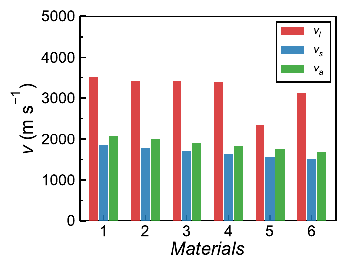
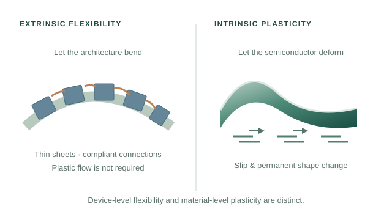

Materials science | Thermoelectrics | Research software
Heyang Chen
I study how structure, transport, and mechanics shape functional semiconductors, while building local
tools that make materials data easier to trust, compare, and reuse.
Now buildingTraceable thermoelectric data workflowsResearch centerTransport, structure, and mechanical reliabilityVisual layerPublication-style plotting from messy lab data
Explore
Research and personal notes
A card-based map of my current work, research themes, previous projects, and personal interests.
My current focus is a local-to-public research workspace for thermoelectric materials: instrument
exports, editable lab metadata, transport-property processing, XRD routines, SPB models, flexible
plotting, literature context, and Markdown/JSON assessment reports in one command-line flow.
Public summary only: raw experiment files, private keys, unpublished sample details, and local lab
records stay out of the homepage.
01 | Launcher
One command surface
A root-level launcher keeps routine work discoverable instead of scattering scripts across folders.
analyze, plot-te, plot-xrd
flexible, spb, assess
02 | Data
Raw-to-processed lab flow
ZEM, LFA, XRD, sample ledgers, and processed CSV tables stay in a traceable folder structure.
Raw folders by batch and sample
Cleaned property tables and extracted features
03 | Metadata
Editable lab memory
Markdown ledgers sync with machine-readable JSON, so chemistry notes are readable and scriptable.
Batch/sample records
Composition, density, heat capacity, notes
04 | Physics
Transport feature extraction
ZEM/LFA data are aligned and converted into consistent thermoelectric properties.
Seebeck, conductivity, thermal conductivity
Power factor, ZT, Lorenz, lattice terms
05 | XRD
Phase and lattice routines
XRD tools generate stacked raw or normalized patterns and connect peaks to reference standards.
Batch plotting and style checks
PDF-card overlay and lattice fitting outputs
06 | Plotting
Publication-style figure system
Plotting is a first-class feature: TE curves, XRD, mixed-unit room-temperature snapshots, grouped
bars, multi-panel layouts, and CSV/TXT/XLSX recipes.
Single-property and combined TE figures
Flexible recipes for messy external tables
07 | Modeling
SPB fitting toolkit
SPB views help compare measurements with simple transport models and performance estimates.
Effective mass and Pisarenko fits
Power-factor, conductivity-axis, and zT views
08 | Assessment
Evidence-grounded reports
Deterministic scripts rank samples, detect trends, retrieve local reference context, and write
Markdown/JSON/prompt outputs for research decisions.
Sample ranking and trend summaries
AI-ready prompts separated from calculations
Plotting demos
Rendered figures with their reproducible Python commands
These examples come from the local plotting demo folder. Each card pairs the rendered figure with a
short description and the command used to generate that view.

Flexible grouped bar
Sound velocity comparison
A grouped-bar recipe comparing longitudinal, shear, and average sound velocities across materials.
Jiang, Binbin, et al.
"High-Entropy-Stabilized Chalcogenides with High Thermoelectric Performance."
Science 371.6531 (2021): 830-834.
Sun, Chuanyao, et al.
"Flexible Thermoelectric Device with Blade-Like Structure for Ultrahigh Output Performance."
Watt 1.1 (2026): 3.
Zhao, Kunpeng, et al.
"Enhanced Thermoelectric Performance through Tuning Bonding Energy in Cu2Se1-xSx
Liquid-Like Materials."
Chemistry of Materials 29.15 (2017): 6367-6377.
Thermoelectric transport and semiconductor mechanics
From solid-state cooling to heat-powered flexible electronics, I study how thermoelectric performance and mechanical behavior can be designed together.
01 / Thermoelectric materials
Direct conversion between heat and electricity
Harvesting a temperature difference offers a potential route to battery-free power supplies, while electrically driven thermoelectric devices provide solid-state cooling.[1][2]
From mechanical reliability to flexible electronics
Strength, toughness, and plasticity help determine fabrication yield, device reliability, and where a semiconductor can be used. Thin geometries enable elastic bending; intrinsically plastic materials also allow permanent shaping.[3][5][8]
Band gap × elongation
Provisional · schematic estimates
Explore the mechanical response of semiconductors and ceramics, with metals as a reference. Hover to preview a point, click to keep a selection, or filter by material family.
Swipe the plot horizontally · tap a point or use the material selector below.
Both numerical axes are logarithmic; near-zero-gap materials occupy a separate strip. Shaded regions are visual guides, not fitted boundaries.
No materials shown. Choose a category or reset the view.
View provisional values & data notes
Coordinates and categories were estimated from the supplied reference image. Multiple examples in a material family have not yet been assigned exact compositions or test conditions. Elongation is shown as a ductility indicator; it does not describe recoverable bending strain. Accurate values and literature references will replace these estimates.
Provisional band gap and elongation values for the visible material categories
My work examines thermoelectric transport and mechanical properties in the Ag2(S,Se,Te) family, focusing on compressive plasticity and fracture toughness in Ag2Se-based alloys and tensile ductility in cubic Ag2(S,Se,Te).
Compressive plasticity, tensile ductility, and fracture toughness describe different responses. The Ag2Se-based alloys remain brittle in bending; they are not presented as equivalent to the ductile cubic alloys.[7][8]
References
Foundations, device context, and my representative work.
The plots use an ideal, single-stage, constant-property model. Device ZT̄ represents the operating temperature interval; it is not a material’s peak zT.[3][4][5]
02 / Peltier cooling
Maximum COP and ZT̄
COP measures heat removed per unit of electrical input. Adjust ZT̄ and the hot–cold temperature difference to compare the optimum with the Carnot limit.
Maximum COPCarnot limitSelected ZT̄
Adjust the controls to explore the constant-property model.
0.1 4
280 K360 K
5 K100 K
Cold side: Tc = Th − ΔT.
Maximum COP
—
Carnot COP
—
Fraction of Carnot
—
A larger hot–cold temperature difference reduces COP. Below the shaded ZT̄ threshold, no current can produce positive net cooling in this model.
03 / Peltier cooling
Cooling power and current
Peltier heat grows linearly with current; Joule heating grows quadratically. Their competition sets an optimum cooling power.
Net cooling QcCurrent for max COPCurrent for max Qc
+ Peltier− Joule / 2− Conduction
An illustrative module with fixed α = 50 mV K⁻¹, R = 2 Ω and Th = 300 K.
0 A12 A
5 K100 K
Cold side: Tc = Th − ΔT.
0.2 W/K1.2 W/K
Net cooling
—
Electrical input
—
COP at this current
—
+ Peltier absorption—αTcI
− Conductive backflow—KΔT
− Cold-side Joule heat—½I²R
= Net cooling power—Qc (W)
Maximum COP and maximum cooling power occur at different currents.
Optimal currents and the no-load cooling limit
Maximum COP
Valid when positive net cooling is possible.
Maximum cooling power
Maximum no-load temperature difference
At Qc = 0, fixed Th and constant Z = α²/(RK). This no-load limit does not describe a device removing a finite heat load.
Adapted from the author’s derivation notes, Eqs. (16), (17), (19) and (22).[3]
04 / Seebeck power generation
Efficiency, ZT̄ and temperature difference
The Carnot limit sets the available thermodynamic efficiency. Finite ZT̄ reduces the fraction a thermoelectric generator can attain.
0.1 4
250 K350 K
0 K500 K
Vary ZT̄
Maximum efficiencyCarnot
Fixed cold-side temperature and temperature difference.
Vary ΔT
Maximum efficiencyCarnot
Fixed cold-side temperature and effective device ZT̄.
Maximum TE efficiency
—
Carnot efficiency
—
Fraction of Carnot
—
Hot-side temperature
—
A small ΔT limits the available efficiency even at high ZT̄. The curves assume an electrical load optimized for efficiency, rather than maximum output power.[5]
From the model to an application
Solid-state cooling. Heat must be rejected at the hot side, including the electrical input: Qh = Qc + Pin. Wearable cooling also depends on thermal interfaces and the heat sink.[1]
Battery-free electronics. Body heat or another available heat source can supply low-power sensors when the harvested energy meets the load. The temperature difference across the device, power conversion and sensing duty cycle matter.[2]
Model assumptions and notation
Steady-state, one-dimensional, single-stage transport with constant α, R and K over each temperature interval. Ideal contacts; no parasitic heat leaks, Thomson heat, or heat-exchanger losses. Joule heat is split equally between the two ends. Temperatures are absolute (K), and ΔT = Th − Tc.
For one p–n couple, α = Sp − Sn, R = Rp + Rn, and K = Kp + Kn. A module uses effective totals. K (W K⁻¹) is thermal conductance; κ (W m⁻¹ K⁻¹) is material thermal conductivity.
In the cooling-power plot, α, R and Th stay fixed; K and ΔT are adjustable, so ZT̄ is calculated. In the efficiency sweeps, ZT̄ is an independent effective parameter at each condition. The ΔT sweep at fixed ZT̄ compares idealized conditions, not the temperature dependence of one specific material. All curves are calculated examples, not measurements of the Ag₂(S,Se,Te) materials.
References
Physical model, derivation notes and application examples.
Heyang Chen. Thermoelectric Cooling. Author’s derivation notes, 3 pp. Cooling-power balance, maximum COP, optimal currents and the no-load temperature limit. Notation standardized here.
What determines whether a semiconductor device can be manufactured intact, operate reliably, and work in a new environment? Alongside its electronic and thermal properties, its mechanical response is a key part of the answer.
Part 01 / Why mechanical properties matter
From material response to device outcomes.
Strength, elastic limits, plastic deformation, and resistance to fracture matter at different stages of a device’s life. No single mechanical metric describes them all.[9]
Make it
Fabrication yield
Cutting, thinning, handling, and assembly impose local stresses. Strength and flaw tolerance help determine whether a component survives processing.
Strength · toughness · processabilityKeep it working
Operational stability
Thermal expansion and repeated mechanical loads can damage the semiconductor or its contacts. Stable operation requires both structural and functional integrity.
Elastic limits · cracks · fatiguePut it to use
Application space
A rigid package, a skin-mounted sensor, and a formed foil need different responses: dimensional stability, reversible bending, or permanent shape change.
Stiffness · flexibility · plasticity
A common language
Read the stress–strain curve.
The curve separates how easily a material deforms, how much stress it supports, and whether that deformation is recoverable.
The initial linear slope, E = dσ/dε. A larger modulus means more stress is needed for the same small elastic strain.
σel Elastic limit
The greatest stress that leaves no permanent strain after unloading. The usable elastic strain also depends on the modulus.
σy · σUTS Strength
Yield strength marks a defined onset of plastic flow; ultimate tensile strength is the peak engineering tensile stress. A high strength does not by itself imply high ductility.
εp Plasticity & ductility
Plasticity leaves permanent deformation after unloading. Ductility describes tensile plastic deformation; large compression strain alone does not establish it.
Energy absorption
Toughness
The area under a uniaxial stress–strain curve up to fracture represents absorbed energy per unit volume. Both the sustained stress and the available strain matter.
Crack resistance
Fracture toughness
Resistance to the growth of an existing crack is a separate property. KIC (MPa m1/2) requires a suitable fracture test; it cannot be read directly from this curve.
Material properties set part of the operating window. Defects, specimen size, loading mode, interfaces, and temperature also affect fabrication yield and device reliability.
Part 02 / Flexibility in real applications
What does the device need to do?
Flexibility connects mechanical properties to the shape and motion of an application. Start with the required deformation, then choose the material and architecture.
Conform & follow motion
Wearables & skin sensors
Fit a curved surface and move with the body while maintaining contact and electrical function.
Evaluate Bending radius, repeated cycles, contact stability, and output under motion.
Wrap a curved surface
Conformal solar cells
Use thin semiconductor sheets on curved supports. Edge and surface quality become part of the mechanical design.[4]
Evaluate Surface strain, edge defects, thermal cycling, and retained efficiency.
Form & retain a shape
Deformable TE foils
Roll or form a plastic semiconductor into a useful geometry, then operate it within an appropriate service window.[8]
Evaluate Forming strain, cracking, and transport properties after deformation.
Material × geometry
A brittle material can still bend.
For a thin, homogeneous sheet of thickness h bent to radius R, reducing thickness lowers both the surface strain at a given radius and the force needed to bend it. This gives an elastic route to flexibility.[3]
Surface strainεmax ≈ h / (2R)
Thinner sheet → less strain at the same radius.
Elastic bending limitRmin ≈ h / (2εlimit)
Use the recoverable strain limit; fracture can set the limit in brittle materials.
Simple bending of a free-standing sheet; R is measured at the neutral plane. At fixed modulus and width, bending rigidity scales with h3.
Elastic flexibility Bend and recover during use.
+
Intrinsic plasticity Form a permanent shape without fracture.
A ductile thin foil can use both: plastic forming during fabrication and elastic bending during service.
Explore flexibility: compare the routes & try the thickness demo +

Original schematic. The slip lines are symbolic, not a crystallographic model.
Comparison of extrinsic flexibility and intrinsic plasticity
Design question
Extrinsic flexibility
Intrinsic plasticity
What changes?
Thickness, geometry, interconnects, or the supporting architecture.
Permanent deformation within the semiconductor.
How does it work?
Reduce strain in a thin sheet or accommodate bending between rigid elements.
Enable slip and other plastic deformation mechanisms before fracture.
Examples
Thin silicon sheets; rigid TE pillars in flexible supports.
Ductile α-Ag2S and selected Ag2S-based alloys.
What must be checked?
Curvature, surface strain, interfaces, and cyclic reliability.
Loading mode, plastic strain, toughness, and retained transport properties.
The two routes can be combined. Thin foils made from a ductile semiconductor benefit from both their material response and their geometry.[1][3][5][8]
Interactive / Extrinsic flexibility
Same material. Different thickness.
A thin silicon sheet can bend elastically even though bulk silicon is brittle. Drag the thickness to explore why.
SiFree-standing silicon sheetElastic bending
Thin enough to reach the target radius and recover on release.
Geometry schematic · thickness exaggerated · no substrate
Explore the geometry
20 μm · thinthick · 500 μm
Strain required at target R0.30%
Assumed failure strain 0.50%
At this radius, hc = 100 μm
Illustrative failure criterion, not a measured Si threshold. Actual limits depend on defects, surfaces, orientation, and loading.
Surface strain at target radiusε = h / (2R)
Less thickness → less strain.
Minimum radius in this modelRmin = mm
Rmin = h / (2εlimit)
Relative bending rigidity ×
∝ h³ · normalized to a 500 μm sheet
What changes?
Geometry changes the bending response. The material remains intrinsically brittle. Elastic bending recovers on unloading; plastic deformation leaves a permanent shape change.
Model & assumptions +
For a homogeneous, free-standing sheet in elastic bending, the neutral plane lies at mid-thickness and εmax = h/(2R). Here, R is measured at that plane. The illustrative limit εlimit = 0.50% is held constant as thickness changes; equality marks the failure boundary.
At a chosen R, hc = 2Rεlimit. This is a geometry-dependent boundary, not a universal brittle-to-flexible transition. Above it, the schematic shows fracture before the target curvature is reached; the strain readout is the required target strain, not a post-fracture measurement. Changing thickness or radius starts a new specimen.
For fixed width, elastic modulus, and Poisson ratio, bending rigidity scales as h³. The visualization prescribes curvature rather than force. Real strength may also depend on thickness, surface damage, edge quality, and flaw statistics. Substrates and multilayers shift the neutral plane.
Peng and Snyder express flexibility as 1/Rmin = (2/h)(σy/E), with σy/E as the material figure of merit. For this brittle-Si illustration, εlimit denotes a fracture limit rather than plastic yielding.
Material response / Intrinsic plasticity
The Ag2S family opens another route.
Room-temperature ductility in α-Ag2S showed that an inorganic semiconductor can undergo substantial plastic deformation. The reported bonding picture combines relatively weak interactions between planes with bonding rearrangements that suppress cleavage during slip.[5]
Alloying within silver chalcogenides then provides a way to connect deformability with thermoelectric transport. Ag2S-based materials have been used in flexible inorganic thermoelectric devices; my cubic Ag2(S,Se,Te) study extends the composition–structure–property design space.[6][8]
Plasticity depends on composition, phase, temperature, and loading. The ductility of one Ag2S-based material should not be assigned to every silver chalcogenide.
Part 03 / Ag–S–Se–Te materials through time
Ag2(S,Se,Te): from ductile solids to devices.
A photographic timeline of Ag2S and its S/Se/Te alloys: from bulk plasticity to shapeable thermoelectrics, rolled foils, and wearable devices.
One materials family, several routes. The timeline follows Ag2(S,Se,Te) materials and their device development. Cu-containing p-type partners and warm processing extend what can be built from this family.
Material and test context +
AgCu(Se,S,Te) is a distinct Cu-containing p-type family, paired with n-type silver chalcogenides in the 2022 and 2026 devices. The 2025 Ag2Se sheet demonstrates warm processing at 393 K, rather than room-temperature ductility.
The 2026 demonstrations depend on the reported ambient temperature and airflow. The Watt health-monitoring system also includes a supercapacitor and a voltage-boost circuit, and acquires data intermittently. The timeline does not compare device outputs measured under different conditions.
References
Background and related research cited in this chapter.
Our Ag₂Se₁₋ₓTeₓ study connects near-room-temperature thermoelectric performance with compressibility, strength, and resistance to crack propagation. Ag₂Se₀.₉Te₀.₁ is a representative composition.
26.7 ± 4.5%
Compression strain Ag2Se0.9Te0.1
4.5 ± 0.6 MPa m1/2
Fracture toughness KIC Ag2Se0.9Te0.1
0.78
zT at 300 K 1.1 at 380 K
The mechanical evidence
More than a compression curve.
We measured compression and bending response, fracture toughness, and energy absorption across a series of Ag2Se1−xTex compositions. Ag2Se0.9Te0.1 reaches a compression strength of 279.2 ± 49 MPa alongside its large compressive strain.
Its fracture toughness and energy absorption provide complementary evidence of mechanical robustness.[7]
The alloys exhibit brittle behavior in bending. Compression plasticity is not evidence of equivalent tensile ductility.
TEM after compression reveals dense dislocations and dislocation arrays. The observed sub-grain boundary structures also suggest a possible contribution from sub-grain rotation.
These observations connect the macroscopic response to deformation within the microstructure; sub-grain rotation remains a proposed mechanism.[7]
The nominal Ag2Se0.9Te0.1 composition reaches zT = 0.78 at 300 K and 1.1 at 380 K. Small Ag deficiencies are used to optimize transport; the paper retains nominal stoichiometric labels for readability.
The result brings compressive plasticity and high fracture toughness into the same material design discussion as carrier transport and thermal conductivity.[7]
High-entropy design in the pseudo-ternary Ag₂S–Ag₂Se–Ag₂Te system connects cubic crystal structure, tensile ductility, and thermoelectric transport. The materials can be shaped and roller-pressed into flexible foils.
60–97%
Tensile elongation across the studied cubic compositions
We compiled composition–structure–plasticity–zT maps across the pseudo-ternary alloy system and outlined the cubic region. The equimolar S/Se/Te anion composition provides a high-entropy starting point, while small Ag deficiencies tune carrier concentration.[8]
The 15% bending strain in the phase map is restricted by the test geometry for ductile compositions; it is not an ultimate fracture strain.
Ag2S1/3Se1/3Te1/3 reaches approximately 97% tensile elongation; Ag1.98S1/3Se1/3Te1/3 reaches approximately 60%. Necking, slip bands, and local strain evolution provide evidence of large plastic deformation.
This tensile response supports a different processing opportunity from the compressive plasticity of the Ag2Se-based alloys.[8]
Ag deficiency lowers the carrier concentration and adjusts electrical and thermal transport. Ag1.98S1/3Se1/3Te1/3 reaches zT = 0.45 at 300 K and 0.8 at 460 K.
The room-temperature κ–σ analysis suggests an average lattice thermal conductivity of approximately 0.2 W m−1 K−1 in the studied cubic materials.[8]
Rolling produces foils down to 30 μm. A separate bending test on a 30 μm foil maintains R/R0 within 99.2–101.3% over 150 cycles, with a minimum bending radius of approximately 3 mm.
A six-leg in-plane generator uses 50 μm Ag1.98S1/3Se1/3Te1/3 foils, Pt wires, and Cu electrodes. At ΔT = 30 K, it delivers a maximum output power of 12.8 μW and a reported maximum power density of 14.3 W m−2.[8]
This is a laboratory device demonstration at the reported temperature difference. Its output is not an on-body power measurement or a demonstrated battery-free sensor system.
References
Sources for this chapter · numbering follows the overview.
I am a Research Fellow at Nanyang Technological University and a Visiting Postdoctoral Fellow at
Northwestern University. My research connects materials synthesis, transport physics, and mechanical
properties.
My work spans high-entropy thermoelectric materials, ductile inorganic semiconductors, and flexible
devices. I also develop TEDEX,
a workspace for experimental data management, transport modeling, scientific plotting, and
AI-assisted materials screening.
Visiting Postdoctoral Fellow · Department of Chemistry
Evanston, IL, USA
Supervisor: Prof. Mercouri G. Kanatzidis
Exploring new chalcogenides and high-entropy thermoelectric materials with low thermal
conductivity, alongside TEDEX workflows for data analysis and AI-assisted materials screening.
Research Fellow · School of Materials Science and Engineering
Singapore
Supervisor: Prof. Qingyu Yan
Research in thermoelectric materials and their electrical and thermal transport properties.
Academic background
Education
–
Shanghai Jiao Tong University
Ph.D. in Materials Science and Engineering
Shanghai, China
Supervisors: Prof. Xun Shi and Prof. Tian-Ran Wei
Doctoral research on thermoelectric transport and plasticity in inorganic semiconductors,
including silver chalcogenides and van der Waals materials for flexible thermoelectric devices,
wearable electronics, and sensors.
Outside the lab, I enjoy astrophotography and keeping small visual records of the world around me.
This is a home for deep-sky images and personal notes.
Astrophotography
Deep-sky gallery
My own nebula and Milky Way frames, paired with a few object facts. Distances are approximate, and
wide-field images can include structures at many depths along the same line of sight.
M31 | Andromeda Galaxy
The nearest major spiral galaxy to the Milky Way, bright enough to see from a dark site.
Type
Spiral galaxy
Constellation
Andromeda
Distance
About 2.5 million ly
Veil Nebula | Cygnus Loop
Lace-like shock fronts from an ancient stellar explosion, spread across a huge patch of Cygnus.
Type
Supernova remnant
Constellation
Cygnus
Distance
About 2,100 ly
M16 | Eagle Nebula
A star-forming emission nebula that contains the famous Pillars of Creation region.
Type
Emission nebula
Constellation
Serpens
Distance
About 7,000 ly
IC 443 | Jellyfish Nebula
A turbulent supernova remnant where the blast wave is interacting with surrounding gas clouds.
Type
Supernova remnant
Constellation
Gemini
Distance
About 5,000 ly
NGC 7000 | North America Nebula
A broad H II region shaped by glowing hydrogen gas and dark dust lanes near Deneb.
Type
Emission nebula
Constellation
Cygnus
Distance
About 2,000 ly
Rosette Nebula | NGC 2237
A circular stellar nursery whose central young cluster has carved a cavity in the gas.
Type
H II region
Constellation
Monoceros
Distance
About 5,000 ly
NGC 1499 | California Nebula
A long, faint emission nebula ionized by nearby hot stars in the Perseus region.
Type
Emission nebula
Constellation
Perseus
Distance
About 1,800 ly
Cygnus Milky Way Wide Field
A dense summer Milky Way field with dark dust, bright stars, and layered hydrogen emission.
Type
Milky Way star field
Constellation
Cygnus
Distance
Many depths
M8 + M20 | Lagoon and Trifid
Two Sagittarius nebulae in one frame: glowing star formation, blue reflection, and dark lanes.
Type
Emission and reflection nebulae
Constellation
Sagittarius
Distance
About 5,000 ly
Pet
Pet notes
Photos and small records can live here later.
Bird
Bird notes
Field sightings, photos, and short notes can live here later.
Running
Running notes
Routes, races, and training snapshots can live here later.